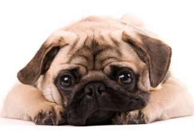

Pugs are unique and special creatures. They are stubborn, have a wild personality, and will be your best friend for life! They will demand your attention always, and love playing with kids! So finding one that is running around without it's owner near by is an automatic red flag! If you find a pug that looks like it has lost it's way, or you feel it has been abused, refer to our local pug rescue! Colorado Pug Rescue (CPR) is a licensed, all volunteer, 501(c)(3) organization dedicated to improving the welfare and quality of life of homeless pug dogs. We are hiring! In need of people who are passionate about animals and are willing to assist in organizing donation events for the local shelters.
| Name | Date |
| Cocoa | 11/10/22 |
| Mochi | 06/03/22 |